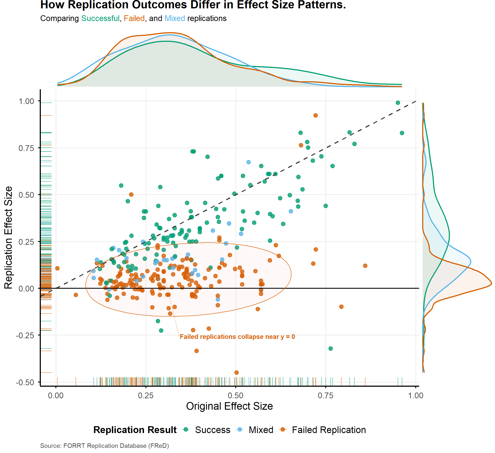
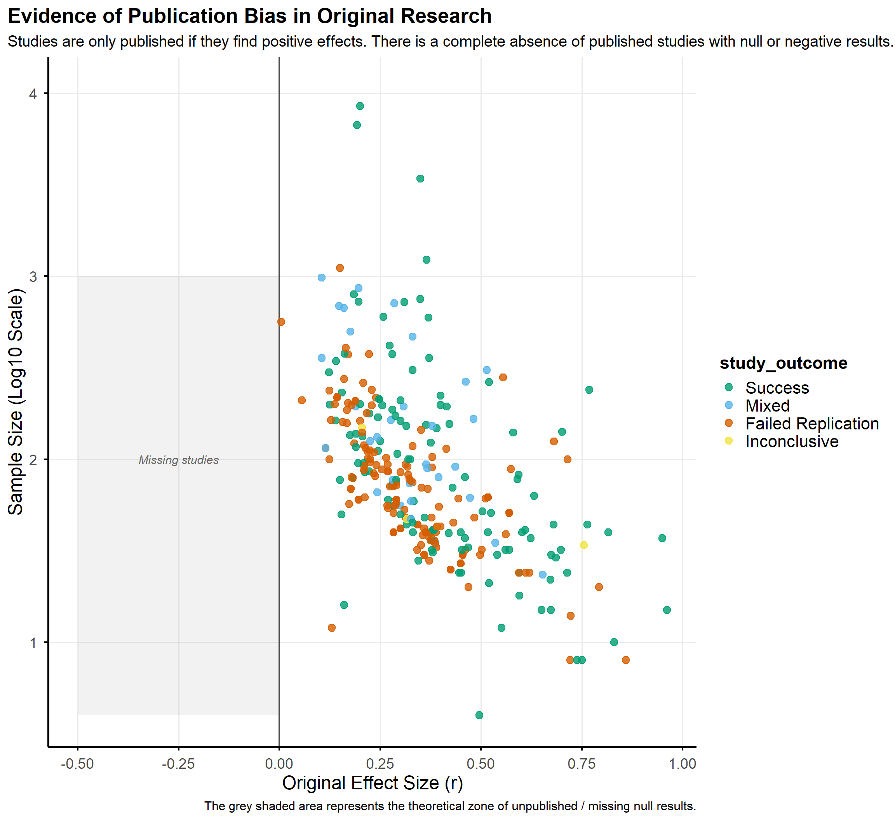

Comparing Original and Replication Effect Sizes Across Replication Outcomes
Author
William Rowe
Published
December 8, 2025
1 Project overview and Research Question
The aim of this project is to explore factors associated with the replicability of scientific research. The central research question for the analysis is: To what extent do replication effect sizes correspond to original reported effect sizes, and how does this relationship differ across replication outcomes?
While multiple exploratory analyses were conducted during the development of this project, the documentation presented here focuses specifically on addressing this research question.
This report provides a reproducible account of the full workflow used to address this question, including data cleaning, study-level collapsing, visualisation, interpretation, and limitations.
2 Setup
A lockfile (renv.lock) capturing the precise package versions used in this analysis is included in on the project github. To reproduce the environment, open the project in RStudio and run renv::restore().
To maintain a clean workflow, custom helper functions (utilised in Section 4.4) are sourced from the external script R/functions.R.
Furthermore, to ensure consistent aesthetics across all visualisations and avoid standard library defaults, a custom ggplot2 theme was defined and loaded from R/plot_theme.R.
Code
# Load packages used in the analysislibrary(tidyverse)library(here)library(readxl)library(janitor)library(stringr)library(purrr)library(dplyr)library(plotly)library(naniar)library(ggtext)library(ggExtra)library(forcats)library(kableExtra)library(knitr)library(ggforce)library(ggrepel)library(codebookr)# Load custom scriptssource(here("R", "plot_theme.R")) # Your themesource(here("R", "functions.R")) # Your new helper functions
3 Data Origins
The dataset used in this project comes from the FORRT Replication Database (FReD), a crowdsourced collection of findings from replication studies that retest the hypotheses and results of original published work. Each row in FReD corresponds to a single effect-level entry from a replication attempt. Because a single original-replication study pair may report multiple effect sizes or outcomes, the raw dataset contains several rows per study. These include original and replication effect sizes, sample sizes, coded replication outcomes, journal metadata, and reference information for both studies.
The version of the dataset used here was obtained from the OSF repository linked on the FReD Shiny app (https://osf.io/9r62x/wiki?wiki=v47n9 ). At the time of analysis, the most recent update was 15 June 2025. FReD compiles data from several large replication initiatives, including the Reproducibility Project: Psychology (Open Science Collaboration, 2015), alongside manually coded submissions gathered by the FORRT team through literature searches and individual contributions.
3.1 Variables / Codebook
These are the main variables used in this project. Not all of them appear in the final visualisations, but they are documented here so that alternative analyses could be performed in variations of this project. See the extended codebook in /codebook for more details.
Table 1: Variables used in this project
Variable
Description
id_original
Identifier for the original study extracted from reference strings.
id_replication
Identifier for the replication study extracted from reference strings.
es_original
Standardised effect size reported for the original study (converted by FReD).
es_replication
Standardised effect size reported for the replication attempt.
n_original
Sample size of the original study, parsed into numeric form.
n_replication
Sample size of the replication study, parsed into numeric form.
Final study-level replication classification after collapsing effect-level rows (Success / Failed Replication / Mixed / NA).
Note
The effect-level result categories used prior to collapsing (e.g., significant positive, significant negative, non-significant effects) are defined in the supplementary file; in brief, they encode the direction of the effect and whether it reached statistical significance.
3.2 Reading the data
The dataset is sourced from the FReD Excel file, which requires the readxl package. The file is loaded in its raw form to maintain full transparency, including the initial rows which contain metadata rather than study data.
Code
# Load the replication dataset data_path <-here("data", "replicationdata.xlsx")# Quick check to see the file existstopifnot(file.exists(data_path)) replicationdf <-read_excel(here("data", "replicationdata.xlsx"))
Note
As the raw data set contains 100 variables, a subset of the target columns is shown below:
For a sample of the final, processed study-level data structure and its key variables, please see Table 4
Table 1: Raw Data Snapshot
result
es_original
es_replication
refonly_original
refonly_replication
orig_journal
success, informative failure to replicate, practical failure to replicate, inconclusive [taken from the respective reports and if not reported automatically computed; success = both effects are significant in the same direction]
Original effect size converted to r [please rather enter the unconverted effect size into the variable “es_orig_value”]
Replication effect size converted to r [please rather enter the unconverted effect size into the variable “es_orig_value”]
Reference of the original study [red ones need to be reformatted to APA]
Reference of the replication study
Journal that published the original findings
success, informative failure to replicate, practical failure to replicate, inconclusive
Originaleffektstärke in r konvertiert [lieber bei es_orig_value eintragen und nicht selbst konvertieren]
Replikationseffektstärke in r konvertiert [lieber bei es_orig_value eintragen und nicht selbst konvertieren]
NA
NA
Zeitschrift, bei der die Originalstudie veröffentlicht wurde
informative failure to replicate
0.31340000000000001
-5.9900000000000002E-2
DeWall, C. N., & Bushman, B. J. (2009). Hot under the collar in a lukewarm environment: Words associated with hot temperature increase aggressive thoughts and hostile perceptions. Journal of Experimental Social Psychology, 45(4), 1045-1047. https://doi.org/10.1016/j.jesp.2009.05.003
McCarthy, R. J. (2014, March 8). The Effect of “Heat-Priming” on Hostile Perceptions. https://doi.org/10.17605/OSF.IO/XSZK6
Journal of Experimental Social Psychology
NA
NA
NA
DeWall, C. N., & Bushman, B. J. (2009). Hot under the collar in a lukewarm environment: Words associated with hot temperature increase aggressive thoughts and hostile perceptions. Journal of Experimental Social Psychology, 45(4), 1045-1047. https://doi.org/10.1016/j.jesp.2009.05.003
McCarthy, R. J. (2014, March 8). The Effect of “Heat-Priming” on Hostile Perceptions. https://doi.org/10.17605/OSF.IO/XSZK6
NA
4 Data wrangling and transformation
4.1 Cleaning
The initial two metadata rows, contain descriptions rather than study data, thus are removed using the slice() function.
Code
# Remove the first 2 meta data rowsreplicationdf_cleaned1 <- replicationdf %>%slice(-(1:2))# Clean collumn names for easier wrangling (lowercase with underscores). replicationdf <- replicationdf %>% janitor::clean_names()
Defining Workflow Vectors
To avoid repetitive hard-coding and ensure future adaptability, specific vectors are defined to streamline subsequent steps in the workflow:
grouped_cols: Identifiers used to collapse effect-level rows into study-level data based on the study references (this will be essential in the study collapsing step (Section 4.3).
numeric_cols: Variables targeted for conversion from character to numeric format (e.g., effect sizes and sample sizes).
categorical_cols: Variables treated as categorical metadata in later merging steps (documented here for alternate analyses, but not required for the final visualization in this project).
Code
# Define columns of interest to avoid hard coding later grouped_cols <-c("id_original", "id_replication")numeric_cols <-c("es_original", "es_replication", "n_original", "n_replication")# (Optional) add categorical variables for alternate analyiscategorical_cols <-c("orig_journal")
Conversions and renaming
Code
# Convert numeric columns to numeric data replicationdf_cleaned1 <- replicationdf_cleaned1 %>%mutate(across(all_of(numeric_cols), parse_number ) )# Rename reference columns to easier IDsreplicationdf_cleaned1 <- replicationdf_cleaned1 %>%rename(id_original = refonly_original,id_replication = refonly_replication )
4.2 Extracting Study Result
The un-transformed result column contained several slight variations in spelling and wording (e.g. “sucess”, “success”) , and multiple labels for failure outcomes. To standardise this variable case_when() was used with regular expressions to combine the variants into 4 consistent categories:
Success, Failed Replication, Inconclusive, and Unknown/Missing
Code
# Inspect unique valuesunique(replicationdf_cleaned1$result)# Create a clean standardised result variablereplicationdf_cleaned1 <- replicationdf_cleaned1 %>%mutate(result_lower =tolower(result),result_clean =case_when(# catches success/sucess variantsstr_detect(result_lower, "^suc") ~"Success", # catches failure variantsstr_detect(result_lower, "fail") ~"Failed Replication",# catches inconclusive but not incompletestr_detect(result_lower, "incon") ~"Inconclusive", TRUE~"Unknown/Missing" ),# convert to factorresult_clean =factor(result_clean))# debugging check that all rows weren't recoded as missing.stopifnot(sum(replicationdf_cleaned1$result_clean =="Unknown/Missing") <nrow(replicationdf_cleaned1))
Note
Below gives the definitions for the effect-level replication results before collapsing
Original and replication effects were either both significant or both non-significant, and effect sizes were in the same direction.
Informative Failure to Replicate
The condition for success was not met (e.g., same-direction but non-significant replication, significant effect in the opposite direction, or a null effect).
Practical Failure to Replicate
The replication was not interpretable due to methodological issues (e.g., insufficient sample size, study discontinued).
Inconclusive
Reporting indicated that the replication result was unclear or conflicted (e.g., multiple tests with differing outcomes, vague hypotheses).
4.3 Collapsing to Study Level Data
The current data set is at an effect level meaning that one row in the data refelects one effect not one study. Therefore there are multiple effect‐level rows for each original-replication pair, as many studies report several outcomes and effects. To generate a single study-level replication outcome, these rows must be collapsed into one row per study pair. This was achieved by grouping through the study identifiers (references) and then assigning the replication outcomes within each group.
Outcomes labelled “Unknown/Missing” are excluded because they reflect incomplete coding rather than empirical results. The remaining outcomes are examined to determine whether the study provides a consistent result.
If there are no valid outcomes, the study is classified as “Unknown/Missing”. If exactly one unique outcome is present, that outcome is assigned (e.g., success), and if multiple distinct outcomes are observed, the study is labelled “Mixed”, (e.g., “success” and “failed”).
Code
# Collapse effect level rows into study level replication outcomesreplication_outcomes_final <- replicationdf_cleaned1 %>%group_by(across(all_of(grouped_cols))) %>%summarise(# All outcomes per study (excliding Unknown/Missing)outcomes =list(result_clean[result_clean !="Unknown/Missing"]),# Unique outcome per study perunique_outcomes =list(unique(unlist(outcomes))),# Final study classification study_outcome =case_when(length(unique_outcomes[[1]]) ==0~NA_character_,length(unique_outcomes[[1]]) ==1~ unique_outcomes[[1]][1],TRUE~"Mixed" ),.groups ="drop" )# Sanity check#Check that "Mixed" is assigned only when more than one valid outcome existscheck_mixed <- replication_outcomes_final %>%filter(study_outcome =="Mixed") %>%filter(lengths(unique_outcomes) <2)stopifnot(nrow(check_mixed) ==0)
Table 3: Values for study result
study_outcome
n
Failed Replication
214
Inconclusive
12
Mixed
53
Success
191
NA
1263
4.4 Creating the final study-level data set
Once the study-level replication outcome was created, the accompanying variables (effect sizes) also needed to be summarised at the study level.
To avoid repeating code and to ensure consistency, two custom helper functions were used:
summarise_numeric: Aggregates numeric variables (e.g., effect sizes, sample sizes) by computing the mean for each study pair.
summarise_categorical: Extracts categorical metadata (e.g., Journal Name) for each study pair.
Note
Note: These functions are sourced from the external script R/functions.R
The final study-level dataset was produced by merging:
the study-level replication outcome
the numeric summaries
the categorical metadata.
This produced a single row per original-replication pair containing the final outcome, averaged effect sizes, study-level sample sizes, and relevant metadata for further analysis. As showed in Table 3, most values are NAs so these are removed to avoid clutter in the visualisation
Code
# Study-level categorical metadata (e.g., Journal)df_meta_cols <-summarise_categorical( replicationdf_cleaned1, grouped_cols, categorical_cols)# Study-level numeric summaries (e.g., mean effect sizes) df_numeric_cols <-summarise_numeric( replicationdf_cleaned1, grouped_cols, numeric_cols)# Merge study-level outcomes with metadata and numeric summariesdf_by_study <- replication_outcomes_final %>%left_join(df_meta_cols, by = grouped_cols) %>%left_join(df_numeric_cols, by = grouped_cols) # Remove rows where no valid study outcome exists df_by_study <- df_by_study %>%filter(study_outcome !="NA")# Reorder for legend clarity laterdf_by_study <- df_by_study %>%mutate(study_outcome = forcats::fct_relevel( study_outcome,"Success", "Mixed", "Failed Replication"))
Code
# Sanity check merge 1# Identify duplicated study pairsdup_check <- df_by_study %>%count(id_original, id_replication) %>%filter(n >1)# keep only duplicates# If there are no duplicate then print "No duplcates detected"# If the are print "warning there are x duplicated study pairsif (nrow(dup_check) ==0) {message("No duplicates detected")} else {message("warning: there are ", nrow(dup_check), " duplicated study pairs")}
Final Data Frame
Table 4: Final Study-Level Data Structure and Key Variables
id_original
id_replication
outcomes
unique_outcomes
study_outcome
orig_journal
es_original
es_replication
n_original
n_replication
Abel, E. L., & Kruger, M. L. (2010). Smile intensity in photographs predicts longevity. Psychological Science, 21, 542-544. doi: 10.1177/0956797610363775
Dufner, M., Brümmer, M., Chung, J. M., Drewke, P. M., Blaison, C., & Schmukle, S. C. (2018). Does Smile Intensity in Photographs Really Predict Longevity? A Replication and Extension of Abel and Kruger (2010). Psychological Science, 29(1), 147-153. https://doi.org/10.1177/0956797617734315
1, 1
1
Failed Replication
Psychological Science
NaN
NaN
224
527
Ackerman, J. M., Nocera, C. C., & Bargh, J. A. (2010). Incidental haptic sensations influence social judgments and decisions. Science, 328(5986), 1712-1715. https://doi.org/10.1126/science.1189993
Camerer, C. F., Dreber, A., Holzmeister, F., Ho, T. H., Huber, J., Johannesson, M., … & Wu, H. (2018). Evaluating the replicability of social science experiments in Nature and Science between 2010 and 2015. Nature human behaviour, 2(9), 637-644. https://doi.org/10.1038/s41562-018-0399-z
1
1
Failed Replication
Science
0.2697280
0.0627038
54
599
Addis, D.R., Wong, A.T., & Schacter, D.L. (2008). Age-related changes in the episodic simulation of future events. Psychological Science, 19(1), 33-41. https://doi.org/10.1111/j.1467-9280.2008.02043.x
Open Science Collaboration. (2015). Estimating the reproducibility of psychological science. Science, 349(6251), aac4716. https://doi.org/10.1126/science.aac4716
3
3
Success
Psychological Science
0.5706936
0.6527304
32
32
Alicke, M. D. (1985). Global self-evaluation as determined by the desirability and controllability of trait adjectives. Journal of personality and social psychology, 49(6), 1621. https://doi.org/10.1037/0022-3514.49.6.1621
Ziano, I., Mok, P. Y. (Cora), & Feldman, G. (2021). Replication and Extension of Alicke (1985) Better-Than-Average Effect for Desirable and Controllable Traits. Social Psychological and Personality Science, 12(6), 1005–1017. https://doi.org/10.1177/1948550620948973
3, 3
3
Success
Journal of Personality and Social Psychology
NaN
NaN
164
1573
4.5 Preliminary Analysis
Descriptive statistics
To ensure the reliability of the merged, study-level dataset, Table 5 a summary of descriptive statistics for the numeric variables
Table 5: Descriptive statistics for merged numeric columns
es_original
es_replication
n_original
n_replication
Min. :0.00464
Min. :-0.4502
Min. : 4.00
Min. : 5.00
1st Qu.:0.22537
1st Qu.: 0.0361
1st Qu.: 41.25
1st Qu.: 89.75
Median :0.32614
Median : 0.1191
Median : 78.00
Median : 219.00
Mean :0.35835
Mean : 0.1816
Mean : 217.21
Mean : 775.42
3rd Qu.:0.45038
3rd Qu.: 0.2828
3rd Qu.: 164.00
3rd Qu.: 673.00
Max. :0.96138
Max. : 0.9900
Max. :10589.00
Max. :12023.00
NA’s :148
NA’s :145
NA’s :32
NA’s :26
These descriptives shows that the average Original Effect Size is 0.36, spanning a range of 0 to 0.96. This contrasts with the average Replication Effect Size which is lower at 0.18 (Range: -0.45 to 0.99).
5 Visualisation
Rationale and Strategy
Because the aim of this project is to examine how closely replication effect sizes correspond to original effect sizes, a scatterplot was selected as the final visualisation. Each point represents one original to replication study pair, allowing direct comparison along a 1:1 reference line. This makes it possible to assess whether replications tend to produce smaller, similar, or larger effects than the original findings.
Colouring points by the study-level replication outcome highlights differences between successful, failed, inconclusive, and mixed replications, providing a visual illustration of how replication performance varies in relation to to effect sizes
For further analytic context, the scatterplot is combined with marginal density plots for both axes. These density curves show how original and replication effect sizes are distributed within each outcome category, helping reveal differences in central spread and overlap across result types.
Code
# Define colours using Okabe color palette (colourblind sensitive)outcome_colour <-c("Success"="#009E73", # teal"Failed Replication"="#D55E00", # red"Inconclusive"="#F0E442", # gold"Mixed"="#56B4E9"# indigo )# Create plot# Note: Themes and labels must be applied ggMarginalscatter_es <-ggplot(df_by_study, aes(x = es_original,y = es_replication,colour = study_outcome)) +# Geometrygeom_point(alpha = .8, size =3) +geom_rug(alpha =0.7, size =0.4) +# Reference line for perfect replication (slope 1) geom_abline(intercept =0,slope =1,linetype ="dashed",colour ="grey25", linewidth =0.9) +# Reference line for a 0 replication effect size geom_hline(yintercept =0, linetype ="solid", colour ="black", linewidth =0.8) +# Scale and Coordinatesscale_x_continuous(breaks =seq(-0.5, 1.5, by =0.25)) +scale_y_continuous(breaks =seq(-0.5, 1.5, by =0.25)) +# Add finer axis tick intervals (every 0.25) for more precision# Labels and theme labs(title ="How Replication Outcomes Differ in Effect Size Patterns.",subtitle =paste0( "Comparing <span style='color:#009E73;'>Successful</span>, ","<span style='color:#D55E00;'>Failed</span>, <span style='color:#F0E442;'>Inconclusive</span>, and <span style='color:#56B4E9;'>Mixed</span> replications" ),x ="Original Effect Size",y ="Replication Effect Size",colour ="Replication Result",# Add source the to figure caption ="Source: FORRT Replication Database (FReD)" ) +scale_colour_manual(values = outcome_colour) + theme_custom +theme(plot.subtitle =element_markdown(size =14, lineheight =1.15),plot.caption =element_text(size =11, colour ="grey30", hjust =0) )# Add marginal density plots (after themes and lables)scatter_es_marginal <- ggExtra::ggMarginal( scatter_es, groupColour =TRUE,groupFill =TRUE, alpha=0.075,linewidth =1)scatter_es_marginal
6 Final Visualisation
The initial plot showed that the Inconclusive category, despite containing very few studies, introduced substantial visual noise in the marginal density plots. To improve clarity, these were removed from the final visualisation.
In addition, the tendency for failed replications to cluster around the zero reference line was made more salient by adding an ellipse highlighting the region in which approximately 95% of failed studies fall.
Note
The final version of the plot, incorporating these changes, is saved to figures/final_replication_plot.png
Code
# Filter out Inconclusive results to reduce noisescatter_es_clean <- scatter_es scatter_es_clean$data <- scatter_es_clean$data %>%filter(study_outcome !="Inconclusive") # Adjusted subtitle with no inconclusivenew_subtitle <-paste0("Comparing <span style='color:#009E73;'>Successful</span>, ","<span style='color:#D55E00;'>Failed</span>, and ","<span style='color:#56B4E9;'>Mixed</span> replications")# Apply subtitlescatter_es_clean <- scatter_es_clean +labs(subtitle = new_subtitle)# Calculate elipse boundaries (95% Interval for failed studies)df_failed <- df_by_study %>%filter(study_outcome =="Failed Replication")dynamic_boundaries <- df_failed %>%summarise(x_min_limit =quantile(es_original, 0.05, na.rm =TRUE),x_max_limit =quantile(es_original, 0.95, na.rm =TRUE),y_min_limit =quantile(es_replication, 0.05, na.rm =TRUE),y_max_limit =quantile(es_replication, 0.95, na.rm =TRUE) )# Calculate annotation coordinatesannotation_coords <- df_failed %>%summarise(x_pos =median(es_original, na.rm =TRUE), y_pos =median(es_replication, na.rm =TRUE))x_anno <- annotation_coords$x_pos y_anno <- annotation_coords$y_pos # Add ellipse and annotation to a new objectscatter_es_annotated <- scatter_es_clean +geom_mark_ellipse(data = . %>%filter(study_outcome =="Failed Replication"& es_original > dynamic_boundaries$x_min_limit & es_original < dynamic_boundaries$x_max_limit & es_replication > dynamic_boundaries$y_min_limit & es_replication < dynamic_boundaries$y_max_limit),aes(fill = study_outcome),alpha =0.05, linewidth =0.5,expand =unit(5, "mm"), show.legend =FALSE ) +# Use ggrepel to place the text outside the data pointsgeom_text_repel(# Create a single data point for the text labeldata =data.frame(x = x_anno, y = y_anno, label ="Failed replications collapse near y = 0"),aes(x = x, y = y, label = label),# Move text away from center (adjustable to move from datapoints)nudge_x =0.2, nudge_y =-0.3,# Style the text and linecolor ="#D55E00", size =4, fontface ="bold",box.padding =unit(1.2, "lines"), # Ensure text avoids the pointspoint.padding =unit(1, "lines"), # Ensure text avoids the median pointmin.segment.length =0, # Ensures the line is always drawn, even if shortsegment.linetype ="dotted" )# Combine marginal plots to create final visualisation with ellipse and textfinal_scatter_visualisation <- ggExtra::ggMarginal( scatter_es_annotated, groupColour =TRUE,groupFill =TRUE, alpha=0.075,linewidth =1)# Save the plot to the figures folderggsave(here("figures", "final_replication_plot.png"), plot = final_scatter_visualisation, width =12, height =11, bg ="white")# Display the plotfinal_scatter_visualisation

6.1 Interpretations
Visual Analysis of Effect Patterns
The visualisation demonstrates a clear pattern of effect size loss, where replication effect sizes are systematically smaller than the original reports. As shown in the figure, original effects cluster predominantly between 0.1 and 0.5 In contrast, replication effects for “Failed” outcomes exhibit a pronounced shift to 0 - concentrating tightly around the y = 0 line as seen around the ellipse. This indicates that failed replications are not entirely from “non-significant” results (a statistical artefact). Instead, the effect magnitudes themselves effectively collapse to zero with a mean of 0.05 .
Success relationship
Successful replications (teal cluster along the dashed 1:1 identity line, demonstrating that when effects are robust, the replication magnitude tends to mirror the original finding. The marginal density plots reinforce this distinction: the distribution for failed studies peaks sharply at zero (indicating negligible effects), whereas successful studies show a broader distribution shifted towards positive values, overlapping with their original effect.
Theoretical Context
The observed “mixed” outcomes occupy a middle ground, suggesting partial consistency in replication attempts which is particularly visible in the density plots. Overall, the tendency for points to fall below the reference line is consistent with the broader literature on the publication bias where original studies are often published due to their large, significant effects which likely overestimate the true effect size. Therefore in replication there is effect size loss and regression to the mean in subsequent replication attempts (Mesquida et al., 2023).
This effect of publication bias is visualised below.
Code
# Funnel Plot Analysis: missing studies# Create the plotfunnel_plot_n <-ggplot(df_by_study, aes(x = es_original, y =log10(n_original))) +# The zero effect line geom_vline(xintercept =0, linetype ="solid", color ="grey30", linewidth =0.8) +# Data Points geom_point(aes(fill = study_outcome, color = study_outcome), alpha =0.8, size =3, shape =21) +# Annotation: the "Empty Zone" - missing studiesannotate("rect", xmin =-0.5, xmax =0, ymin =min(log10(df_by_study$n_original), na.rm=TRUE), ymax =3, alpha =0.1, fill ="grey50") +annotate("text", x =-0.25, y =2, label ="Missing studies", color ="grey40", fontface ="italic", size =4) +# Scales and coloursscale_y_continuous(breaks = scales::pretty_breaks()) +scale_x_continuous(breaks =seq(-0.5, 1, 0.25)) +scale_fill_manual(values = outcome_colour) +scale_color_manual(values = outcome_colour) +#Labels and Themelabs(title ="Evidence of Publication Bias in Original Research",subtitle ="Studies are only published if they find positive effects. There is a complete absence of published studies with null or negative results.",x ="Original Effect Size (r)",y ="Sample Size (Log10 Scale)",caption ="The grey shaded area represents the theoretical zone of unpublished / missing null results." ) + theme_custom +theme(plot.subtitle =element_markdown(lineheight =1.2),legend.position ="right" )# Save the plot to the figures folderggsave(here("figures", "funnel_plot_bias_assessment.png"), plot = funnel_plot_n, width =10, height =10, bg ="white")# Displayfunnel_plot_n

Note
Since Standard Error (SE) was not available in the dataset, sample size was used as a proxy. As shown in Table 5, sample sizes varied significantly therefore, a log10 transformation was applied to the y-axis to improve readability.
The complete absence of studies with null or negative effects suggests that such findings are systematically restricted from the published record, confirming that the original literature is likely skewed by publication bias.
6.2 Evaluation
Non-Independence of Data Structure
A key limitation of the current analysis is that many effect-size estimates originate from the same underlying participant samples, meaning the dataset contains clusters of non-independent observations. When multiple effects are derived from a single sample, they share the same participants, study procedures, and contextual factors. This violates the assumption of independent observations which underpins most visual and statistical comparisons (Aarts et al., 2014). In practical terms, this means that patterns in Figure 1 may partly reflect the characteristics of a small number of heavily represented samples rather than the broader population of replication attempts.
While FReD includes a sample_id variable intended to distinguish between unique participant pools, this field was loosley populated in the current version of the dataset. Therefore, it was not possible to reliably separate effects by sample without discarding a large proportion of the data. Future follow ups could investigate this more once this variable is more thoroughly populated.
Methodological Constraints:
Averaging Heterogeneity A further limitation concerns the averaging of multiple effect sizes within a single original-replication pair - performed in Section 4.4. Some studies report several effects that can differ in statistical model, measurement scale, or experimental condition. Collapsing these heterogeneous effects into a single numeric average assumes they are commensurable, which may not be true. If the effects tap different psychological processes, the resulting mean may not correspond to a meaningful underlying quantity, potentially distorting the pattern of replication.
This limitation is visible in the scatter plot, where some extreme “successful” points lie far from the reference line or even switch signs across original and replication effects. These arrise because the heterogeneous effects were condensed into a single numerical value.
7 Summary
This project has strengthened my understanding of data analysis and visualisation in R, particularly in developing reproducible workflows, writing human-readable code, and integrating multiple analytical steps into a coherent project. Prior to this, my experience was all with r scripts entirely for my own use. So learning how to clean and reshape a real-world dataset - and how to build a structured Quarto document that others can reproduce and understand was very valuable, and I can see how useful these skills will be in the future.
If more time were available, I would extend the analysis by exploring how categorical study characteristics influence replicability. For example, further work could examine how outcomes vary across journals, publication years, and sample sizes, using bar charts, bubble plots, or interactive filtering tools to identify potential sources of bias.
I briefly experimented with interactive visualisations (e.g., Plotly), but chose a static plot to maintain clarity and focus for the final deliverable. A natural next step would be to develop an interactive dashboard (likely shiny) to allow users to filter studies by outcome, journal, year, or sample size. Building such a dashboard was beyond the current scope of this project for me, but this work has motivated me to continue learning Shiny and interactive visualisation techniques.
Source Code
---title: "The Replicability of Scientific Research"subtitle: "Comparing Original and Replication Effect Sizes Across Replication Outcomes"author: "William Rowe"date: todayformat: html: toc: true number-sections: true fig-cap-location: bottom theme: cosmo code-tools: true code-fold: show title-block-banner: "#1E2A56" title-block-banner-color: "white"execute: echo: true warning: false message: false---# Project overview and Research QuestionThe aim of this project is to explore factors associated with the replicability of scientific research. The central research question for the analysis is: To what extent do replication effect sizes correspond to original reported effect sizes, and how does this relationship differ across replication outcomes?While multiple exploratory analyses were conducted during the development of this project, the documentation presented here focuses specifically on addressing this research question.This report provides a reproducible account of the full workflow used to address this question, including data cleaning, study-level collapsing, visualisation, interpretation, and limitations.# SetupA lockfile (renv.lock) capturing the precise package versions used in this analysis is included in on the project github. To reproduce the environment, open the project in RStudio and run renv::restore().To maintain a clean workflow, custom helper functions (utilised in @sec-final-dataset) are sourced from the external script R/functions.R.Furthermore, to ensure consistent aesthetics across all visualisations and avoid standard library defaults, a custom ggplot2 theme was defined and loaded from R/plot_theme.R.```{r}#| code-fold: true# Load packages used in the analysislibrary(tidyverse)library(here)library(readxl)library(janitor)library(stringr)library(purrr)library(dplyr)library(plotly)library(naniar)library(ggtext)library(ggExtra)library(forcats)library(kableExtra)library(knitr)library(ggforce)library(ggrepel)library(codebookr)# Load custom scriptssource(here("R", "plot_theme.R")) # Your themesource(here("R", "functions.R")) # Your new helper functions```# Data OriginsThe dataset used in this project comes from the FORRT Replication Database (FReD), a crowdsourced collection of findings from replication studies that retest the hypotheses and results of original published work. Each row in FReD corresponds to a single effect-level entry from a replication attempt. Because a single original-replication study pair may report multiple effect sizes or outcomes, the raw dataset contains several rows per study. These include original and replication effect sizes, sample sizes, coded replication outcomes, journal metadata, and reference information for both studies.The version of the dataset used here was obtained from the OSF repository linked on the FReD Shiny app (<https://osf.io/9r62x/wiki?wiki=v47n9> ). At the time of analysis, the most recent update was 15 June 2025. FReD compiles data from several large replication initiatives, including the Reproducibility Project: Psychology (Open Science Collaboration, 2015), alongside manually coded submissions gathered by the FORRT team through literature searches and individual contributions.## Variables / CodebookThese are the main variables used in this project. Not all of them appear in the final visualisations, but they are documented here so that alternative analyses could be performed in variations of this project. See the extended codebook in /codebook for more details.```{r}#| echo: false#| label: tbl-project-variables#| tbl-cap: "Variables used in this project"df_vars <-tribble(~Variable, ~Description,"id_original", "Identifier for the original study extracted from reference strings.","id_replication", "Identifier for the replication study extracted from reference strings.","es_original", "Standardised effect size reported for the original study (converted by FReD).","es_replication", "Standardised effect size reported for the replication attempt.","n_original", "Sample size of the original study, parsed into numeric form.","n_replication", "Sample size of the replication study, parsed into numeric form.","result_clean", "Cleaned effect-level replication outcome (Success / Failed Replication / Inconclusive / Unknown).","study_outcome", "Final study-level replication classification after collapsing effect-level rows (Success / Failed Replication / Mixed / NA).",)df_vars %>%kable(align ="l", escape =TRUE) %>%kable_styling(full_width =FALSE,bootstrap_options =c("striped", "hover", "condensed") )```::: callout-noteThe effect-level result categories used prior to collapsing (e.g., significant positive, significant negative, non-significant effects) are defined in the supplementary file; in brief, they encode the direction of the effect and whether it reached statistical significance.:::## Reading the dataThe dataset is sourced from the FReD Excel file, which requires the readxl package. The file is loaded in its raw form to maintain full transparency, including the initial rows which contain metadata rather than study data.```{r}# Load the replication dataset data_path <-here("data", "replicationdata.xlsx")# Quick check to see the file existstopifnot(file.exists(data_path)) replicationdf <-read_excel(here("data", "replicationdata.xlsx"))```::: callout-noteAs the raw data set contains 100 variables, a subset of the target columns is shown below:For a sample of the final, processed study-level data structure and its key variables, please see @tbl-cleaned-data:::```{r}#| echo: false#| label: raw-data-snapshot#| # Show first 6 rows of key raw variables onlyreplicationdf %>%select( result, es_original, es_replication, refonly_original, refonly_replication, orig_journal ) %>%head(4) %>% knitr::kable(caption ="Table 1: Raw Data Snapshot")```# Data wrangling and transformation## CleaningThe initial two metadata rows, contain descriptions rather than study data, thus are removed using the slice() function.```{r}# Remove the first 2 meta data rowsreplicationdf_cleaned1 <- replicationdf %>%slice(-(1:2))# Clean collumn names for easier wrangling (lowercase with underscores). replicationdf <- replicationdf %>% janitor::clean_names()```**Defining Workflow Vectors**To avoid repetitive hard-coding and ensure future adaptability, specific vectors are defined to streamline subsequent steps in the workflow:- grouped_cols: Identifiers used to collapse effect-level rows into study-level data based on the study references (this will be essential in the study collapsing step (@sec-studycollapse).- numeric_cols: Variables targeted for conversion from character to numeric format (e.g., effect sizes and sample sizes).- categorical_cols: Variables treated as categorical metadata in later merging steps (documented here for alternate analyses, but not required for the final visualization in this project).```{r}# Define columns of interest to avoid hard coding later grouped_cols <-c("id_original", "id_replication")numeric_cols <-c("es_original", "es_replication", "n_original", "n_replication")# (Optional) add categorical variables for alternate analyiscategorical_cols <-c("orig_journal") ```**Conversions and renaming**```{r}# Convert numeric columns to numeric data replicationdf_cleaned1 <- replicationdf_cleaned1 %>%mutate(across(all_of(numeric_cols), parse_number ) )# Rename reference columns to easier IDsreplicationdf_cleaned1 <- replicationdf_cleaned1 %>%rename(id_original = refonly_original,id_replication = refonly_replication )```## Extracting Study ResultThe un-transformed result column contained several slight variations in spelling and wording (e.g. "sucess", "success") , and multiple labels for failure outcomes. To standardise this variable case_when() was used with regular expressions to combine the variants into 4 consistent categories:Success, Failed Replication, Inconclusive, and Unknown/Missing```{r}#| results: hide# Inspect unique valuesunique(replicationdf_cleaned1$result)# Create a clean standardised result variablereplicationdf_cleaned1 <- replicationdf_cleaned1 %>%mutate(result_lower =tolower(result),result_clean =case_when(# catches success/sucess variantsstr_detect(result_lower, "^suc") ~"Success", # catches failure variantsstr_detect(result_lower, "fail") ~"Failed Replication",# catches inconclusive but not incompletestr_detect(result_lower, "incon") ~"Inconclusive", TRUE~"Unknown/Missing" ),# convert to factorresult_clean =factor(result_clean))# debugging check that all rows weren't recoded as missing.stopifnot(sum(replicationdf_cleaned1$result_clean =="Unknown/Missing") <nrow(replicationdf_cleaned1))```::: callout-noteBelow gives the definitions for the effect-level replication results before collapsing:::```{r}#| echo: false#| label: tbl-effect-level-definitions#| tbl-cap: "Effect-level replication outcome definitions"df_effect_defs <-tribble(~Outcome, ~Definition,"Success", "Original and replication effects were either both significant or both non-significant, and effect sizes were in the same direction.","Informative Failure to Replicate","The condition for success was not met (e.g., same-direction but non-significant replication, significant effect in the opposite direction, or a null effect).","Practical Failure to Replicate", "The replication was not interpretable due to methodological issues (e.g., insufficient sample size, study discontinued).","Inconclusive", "Reporting indicated that the replication result was unclear or conflicted (e.g., multiple tests with differing outcomes, vague hypotheses).")df_effect_defs %>%kable(align ="l", escape =TRUE) %>%kable_styling(full_width =FALSE,bootstrap_options =c("striped", "hover", "condensed") )```## Collapsing to Study Level Data {#sec-studycollapse}The current data set is at an effect level meaning that one row in the data refelects one effect not one study. Therefore there are multiple effect‐level rows for each original-replication pair, as many studies report several outcomes and effects. To generate a single study-level replication outcome, these rows must be collapsed into one row per study pair. This was achieved by grouping through the study identifiers (references) and then assigning the replication outcomes within each group.Outcomes labelled “Unknown/Missing” are excluded because they reflect incomplete coding rather than empirical results. The remaining outcomes are examined to determine whether the study provides a consistent result.If there are no valid outcomes, the study is classified as “Unknown/Missing”. If exactly one unique outcome is present, that outcome is assigned (e.g., success), and if multiple distinct outcomes are observed, the study is labelled “Mixed", (e.g., "success" and "failed").```{r}#| results: hide# Collapse effect level rows into study level replication outcomesreplication_outcomes_final <- replicationdf_cleaned1 %>%group_by(across(all_of(grouped_cols))) %>%summarise(# All outcomes per study (excliding Unknown/Missing)outcomes =list(result_clean[result_clean !="Unknown/Missing"]),# Unique outcome per study perunique_outcomes =list(unique(unlist(outcomes))),# Final study classification study_outcome =case_when(length(unique_outcomes[[1]]) ==0~NA_character_,length(unique_outcomes[[1]]) ==1~ unique_outcomes[[1]][1],TRUE~"Mixed" ),.groups ="drop" )# Sanity check#Check that "Mixed" is assigned only when more than one valid outcome existscheck_mixed <- replication_outcomes_final %>%filter(study_outcome =="Mixed") %>%filter(lengths(unique_outcomes) <2)stopifnot(nrow(check_mixed) ==0)``````{r}#| label: tbl-study-results#| echo: falsereplication_outcomes_final %>%count(study_outcome) %>% knitr::kable(caption ="Values for study result",align ="c" )```## Creating the final study-level data set {#sec-final-dataset}Once the study-level replication outcome was created, the accompanying variables (effect sizes) also needed to be summarised at the study level.To avoid repeating code and to ensure consistency, two custom helper functions were used:- summarise_numeric: Aggregates numeric variables (e.g., effect sizes, sample sizes) by computing the mean for each study pair.- summarise_categorical: Extracts categorical metadata (e.g., Journal Name) for each study pair.::: callout-noteNote: These functions are sourced from the external script R/functions.R:::The final study-level dataset was produced by merging:- the study-level replication outcome- the numeric summaries- the categorical metadata.This produced a single row per original-replication pair containing the final outcome, averaged effect sizes, study-level sample sizes, and relevant metadata for further analysis. As showed in @tbl-study-results, most values are NAs so these are removed to avoid clutter in the visualisation```{r}#| results: hide# Study-level categorical metadata (e.g., Journal)df_meta_cols <-summarise_categorical( replicationdf_cleaned1, grouped_cols, categorical_cols)# Study-level numeric summaries (e.g., mean effect sizes) df_numeric_cols <-summarise_numeric( replicationdf_cleaned1, grouped_cols, numeric_cols)# Merge study-level outcomes with metadata and numeric summariesdf_by_study <- replication_outcomes_final %>%left_join(df_meta_cols, by = grouped_cols) %>%left_join(df_numeric_cols, by = grouped_cols) # Remove rows where no valid study outcome exists df_by_study <- df_by_study %>%filter(study_outcome !="NA")# Reorder for legend clarity laterdf_by_study <- df_by_study %>%mutate(study_outcome = forcats::fct_relevel( study_outcome,"Success", "Mixed", "Failed Replication"))``````{r}# Sanity check merge 1# Identify duplicated study pairsdup_check <- df_by_study %>%count(id_original, id_replication) %>%filter(n >1)# keep only duplicates# If there are no duplicate then print "No duplcates detected"# If the are print "warning there are x duplicated study pairsif (nrow(dup_check) ==0) {message("No duplicates detected")} else {message("warning: there are ", nrow(dup_check), " duplicated study pairs")}```**Final Data Frame**```{r}#| label: tbl-cleaned-data#| echo: falsedf_by_study %>%head(4) %>% knitr::kable(caption ="Final Study-Level Data Structure and Key Variables")```## Preliminary Analysis**Descriptive statistics**To ensure the reliability of the merged, study-level dataset, @tbl-descriptives-table a summary of descriptive statistics for the numeric variables```{r}#| label: tbl-descriptives-table#| echo: false#Sanity check merge 2summary(df_by_study[c("es_original","es_replication", "n_original","n_replication")]) %>% knitr::kable(caption ="Descriptive statistics for merged numeric columns",align ="c" )```These descriptives shows that the average Original Effect Size is `r round(mean(df_by_study$es_original, na.rm=TRUE), 2)`, spanning a range of `r round(min(df_by_study$es_original, na.rm = TRUE), 2)` to `r round(max(df_by_study$es_original, na.rm = TRUE), 2)`. This contrasts with the average Replication Effect Size which is lower at `r round(mean(df_by_study$es_replication, na.rm = TRUE), 2)` (Range: `r round(min(df_by_study$es_replication, na.rm = TRUE), 2)` to `r round(max(df_by_study$es_replication, na.rm = TRUE), 2)`).# Visualisation**Rationale and Strategy**Because the aim of this project is to examine how closely replication effect sizes correspond to original effect sizes, a scatterplot was selected as the final visualisation. Each point represents one original to replication study pair, allowing direct comparison along a 1:1 reference line. This makes it possible to assess whether replications tend to produce smaller, similar, or larger effects than the original findings.Colouring points by the study-level replication outcome highlights differences between successful, failed, inconclusive, and mixed replications, providing a visual illustration of how replication performance varies in relation to to effect sizesFor further analytic context, the scatterplot is combined with marginal density plots for both axes. These density curves show how original and replication effect sizes are distributed within each outcome category, helping reveal differences in central spread and overlap across result types.```{r}#| fig-width: 12#| fig-height: 11# Define colours using Okabe color palette (colourblind sensitive)outcome_colour <-c("Success"="#009E73", # teal"Failed Replication"="#D55E00", # red"Inconclusive"="#F0E442", # gold"Mixed"="#56B4E9"# indigo )# Create plot# Note: Themes and labels must be applied ggMarginalscatter_es <-ggplot(df_by_study, aes(x = es_original,y = es_replication,colour = study_outcome)) +# Geometrygeom_point(alpha = .8, size =3) +geom_rug(alpha =0.7, size =0.4) +# Reference line for perfect replication (slope 1) geom_abline(intercept =0,slope =1,linetype ="dashed",colour ="grey25", linewidth =0.9) +# Reference line for a 0 replication effect size geom_hline(yintercept =0, linetype ="solid", colour ="black", linewidth =0.8) +# Scale and Coordinatesscale_x_continuous(breaks =seq(-0.5, 1.5, by =0.25)) +scale_y_continuous(breaks =seq(-0.5, 1.5, by =0.25)) +# Add finer axis tick intervals (every 0.25) for more precision# Labels and theme labs(title ="How Replication Outcomes Differ in Effect Size Patterns.",subtitle =paste0( "Comparing <span style='color:#009E73;'>Successful</span>, ","<span style='color:#D55E00;'>Failed</span>, <span style='color:#F0E442;'>Inconclusive</span>, and <span style='color:#56B4E9;'>Mixed</span> replications" ),x ="Original Effect Size",y ="Replication Effect Size",colour ="Replication Result",# Add source the to figure caption ="Source: FORRT Replication Database (FReD)" ) +scale_colour_manual(values = outcome_colour) + theme_custom +theme(plot.subtitle =element_markdown(size =14, lineheight =1.15),plot.caption =element_text(size =11, colour ="grey30", hjust =0) )# Add marginal density plots (after themes and lables)scatter_es_marginal <- ggExtra::ggMarginal( scatter_es, groupColour =TRUE,groupFill =TRUE, alpha=0.075,linewidth =1)scatter_es_marginal```# Final VisualisationThe initial plot showed that the Inconclusive category, despite containing very few studies, introduced substantial visual noise in the marginal density plots. To improve clarity, these were removed from the final visualisation.In addition, the tendency for failed replications to cluster around the zero reference line was made more salient by adding an ellipse highlighting the region in which approximately 95% of failed studies fall.::: callout-noteThe final version of the plot, incorporating these changes, is saved to figures/final_replication_plot.png:::```{r}#| fig-width: 12#| fig-height: 11# Filter out Inconclusive results to reduce noisescatter_es_clean <- scatter_es scatter_es_clean$data <- scatter_es_clean$data %>%filter(study_outcome !="Inconclusive") # Adjusted subtitle with no inconclusivenew_subtitle <-paste0("Comparing <span style='color:#009E73;'>Successful</span>, ","<span style='color:#D55E00;'>Failed</span>, and ","<span style='color:#56B4E9;'>Mixed</span> replications")# Apply subtitlescatter_es_clean <- scatter_es_clean +labs(subtitle = new_subtitle)# Calculate elipse boundaries (95% Interval for failed studies)df_failed <- df_by_study %>%filter(study_outcome =="Failed Replication")dynamic_boundaries <- df_failed %>%summarise(x_min_limit =quantile(es_original, 0.05, na.rm =TRUE),x_max_limit =quantile(es_original, 0.95, na.rm =TRUE),y_min_limit =quantile(es_replication, 0.05, na.rm =TRUE),y_max_limit =quantile(es_replication, 0.95, na.rm =TRUE) )# Calculate annotation coordinatesannotation_coords <- df_failed %>%summarise(x_pos =median(es_original, na.rm =TRUE), y_pos =median(es_replication, na.rm =TRUE))x_anno <- annotation_coords$x_pos y_anno <- annotation_coords$y_pos # Add ellipse and annotation to a new objectscatter_es_annotated <- scatter_es_clean +geom_mark_ellipse(data = . %>%filter(study_outcome =="Failed Replication"& es_original > dynamic_boundaries$x_min_limit & es_original < dynamic_boundaries$x_max_limit & es_replication > dynamic_boundaries$y_min_limit & es_replication < dynamic_boundaries$y_max_limit),aes(fill = study_outcome),alpha =0.05, linewidth =0.5,expand =unit(5, "mm"), show.legend =FALSE ) +# Use ggrepel to place the text outside the data pointsgeom_text_repel(# Create a single data point for the text labeldata =data.frame(x = x_anno, y = y_anno, label ="Failed replications collapse near y = 0"),aes(x = x, y = y, label = label),# Move text away from center (adjustable to move from datapoints)nudge_x =0.2, nudge_y =-0.3,# Style the text and linecolor ="#D55E00", size =4, fontface ="bold",box.padding =unit(1.2, "lines"), # Ensure text avoids the pointspoint.padding =unit(1, "lines"), # Ensure text avoids the median pointmin.segment.length =0, # Ensures the line is always drawn, even if shortsegment.linetype ="dotted" )# Combine marginal plots to create final visualisation with ellipse and textfinal_scatter_visualisation <- ggExtra::ggMarginal( scatter_es_annotated, groupColour =TRUE,groupFill =TRUE, alpha=0.075,linewidth =1)# Save the plot to the figures folderggsave(here("figures", "final_replication_plot.png"), plot = final_scatter_visualisation, width =12, height =11, bg ="white")# Display the plotfinal_scatter_visualisation```## Interpretations**Visual Analysis of Effect Patterns**The visualisation demonstrates a clear pattern of effect size loss, where replication effect sizes are systematically smaller than the original reports. As shown in the figure, original effects cluster predominantly between 0.1 and 0.5 In contrast, replication effects for "[Failed]{style="color:#D55E00;"}" outcomes exhibit a pronounced shift to 0 - concentrating tightly around the y = 0 line as seen around the ellipse. This indicates that failed replications are not entirely from "non-significant" results (a statistical artefact). Instead, the effect magnitudes themselves effectively collapse to zero with a mean of `r df_by_study %>% filter(study_outcome == "Failed Replication") %>% summarise(mean_rep = round(mean(es_replication, na.rm = TRUE), 2)) %>% pull(mean_rep)` .**Success relationship**[Successful]{style="color:#009E73;"} replications (teal cluster along the dashed 1:1 identity line, demonstrating that when effects are robust, the replication magnitude tends to mirror the original finding. The marginal density plots reinforce this distinction: the distribution for failed studies peaks sharply at zero (indicating negligible effects), whereas successful studies show a broader distribution shifted towards positive values, overlapping with their original effect.**Theoretical Context**The observed "[mixed]{style="color:#56B4E9;"}" outcomes occupy a middle ground, suggesting partial consistency in replication attempts which is particularly visible in the density plots. Overall, the tendency for points to fall below the reference line is consistent with the broader literature on the publication bias where original studies are often published due to their large, significant effects which likely overestimate the true effect size. Therefore in replication there is effect size loss and regression to the mean in subsequent replication attempts (Mesquida et al., 2023).This effect of publication bias is visualised below.```{r}#| fig-width: 12#| fig-height: 11# Funnel Plot Analysis: missing studies# Create the plotfunnel_plot_n <-ggplot(df_by_study, aes(x = es_original, y =log10(n_original))) +# The zero effect line geom_vline(xintercept =0, linetype ="solid", color ="grey30", linewidth =0.8) +# Data Points geom_point(aes(fill = study_outcome, color = study_outcome), alpha =0.8, size =3, shape =21) +# Annotation: the "Empty Zone" - missing studiesannotate("rect", xmin =-0.5, xmax =0, ymin =min(log10(df_by_study$n_original), na.rm=TRUE), ymax =3, alpha =0.1, fill ="grey50") +annotate("text", x =-0.25, y =2, label ="Missing studies", color ="grey40", fontface ="italic", size =4) +# Scales and coloursscale_y_continuous(breaks = scales::pretty_breaks()) +scale_x_continuous(breaks =seq(-0.5, 1, 0.25)) +scale_fill_manual(values = outcome_colour) +scale_color_manual(values = outcome_colour) +#Labels and Themelabs(title ="Evidence of Publication Bias in Original Research",subtitle ="Studies are only published if they find positive effects. There is a complete absence of published studies with null or negative results.",x ="Original Effect Size (r)",y ="Sample Size (Log10 Scale)",caption ="The grey shaded area represents the theoretical zone of unpublished / missing null results." ) + theme_custom +theme(plot.subtitle =element_markdown(lineheight =1.2),legend.position ="right" )# Save the plot to the figures folderggsave(here("figures", "funnel_plot_bias_assessment.png"), plot = funnel_plot_n, width =10, height =10, bg ="white")# Displayfunnel_plot_n```::: callout-noteSince Standard Error (SE) was not available in the dataset, sample size was used as a proxy. As shown in @tbl-descriptives-table, sample sizes varied significantly therefore, a log10 transformation was applied to the y-axis to improve readability.:::The complete absence of studies with null or negative effects suggests that such findings are systematically restricted from the published record, confirming that the original literature is likely skewed by publication bias.## Evaluation**Non-Independence of Data Structure**A key limitation of the current analysis is that many effect-size estimates originate from the same underlying participant samples, meaning the dataset contains clusters of non-independent observations. When multiple effects are derived from a single sample, they share the same participants, study procedures, and contextual factors. This violates the assumption of independent observations which underpins most visual and statistical comparisons (Aarts et al., 2014). In practical terms, this means that patterns in Figure 1 may partly reflect the characteristics of a small number of heavily represented samples rather than the broader population of replication attempts.While FReD includes a sample_id variable intended to distinguish between unique participant pools, this field was loosley populated in the current version of the dataset. Therefore, it was not possible to reliably separate effects by sample without discarding a large proportion of the data. Future follow ups could investigate this more once this variable is more thoroughly populated.**Methodological Constraints:**Averaging Heterogeneity A further limitation concerns the averaging of multiple effect sizes within a single original-replication pair - performed in @sec-final-dataset. Some studies report several effects that can differ in statistical model, measurement scale, or experimental condition. Collapsing these heterogeneous effects into a single numeric average assumes they are commensurable, which may not be true. If the effects tap different psychological processes, the resulting mean may not correspond to a meaningful underlying quantity, potentially distorting the pattern of replication.This limitation is visible in the scatter plot, where some extreme “successful” points lie far from the reference line or even switch signs across original and replication effects. These arrise because the heterogeneous effects were condensed into a single numerical value.# SummaryThis project has strengthened my understanding of data analysis and visualisation in R, particularly in developing reproducible workflows, writing human-readable code, and integrating multiple analytical steps into a coherent project. Prior to this, my experience was all with r scripts entirely for my own use. So learning how to clean and reshape a real-world dataset - and how to build a structured Quarto document that others can reproduce and understand was very valuable, and I can see how useful these skills will be in the future.If more time were available, I would extend the analysis by exploring how categorical study characteristics influence replicability. For example, further work could examine how outcomes vary across journals, publication years, and sample sizes, using bar charts, bubble plots, or interactive filtering tools to identify potential sources of bias.I briefly experimented with interactive visualisations (e.g., Plotly), but chose a static plot to maintain clarity and focus for the final deliverable. A natural next step would be to develop an interactive dashboard (likely shiny) to allow users to filter studies by outcome, journal, year, or sample size. Building such a dashboard was beyond the current scope of this project for me, but this work has motivated me to continue learning Shiny and interactive visualisation techniques.```{r}#| include: falsedf_codebook <- df_by_study %>%select( id_original, id_replication, study_outcome, orig_journal, es_original, es_replication, n_original, n_replication )replication_codebook <-codebook( df_codebook,title ="Replication Study Codebook",no_summary_stats =c("id_original", "id_replication"))print(replication_codebook, here("materials", "replication_codebook.docx"))```